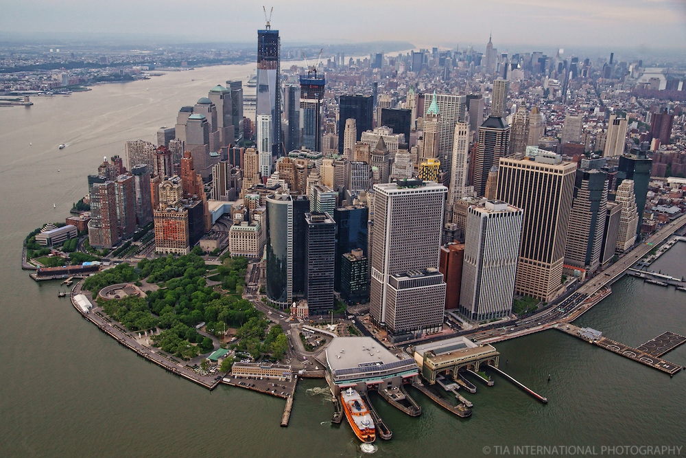
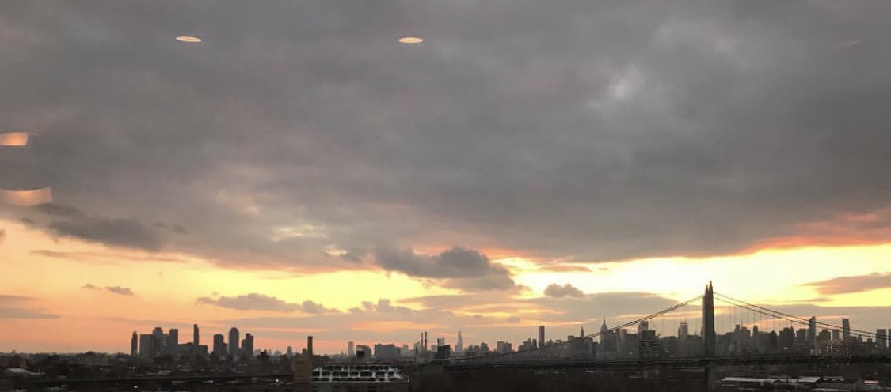
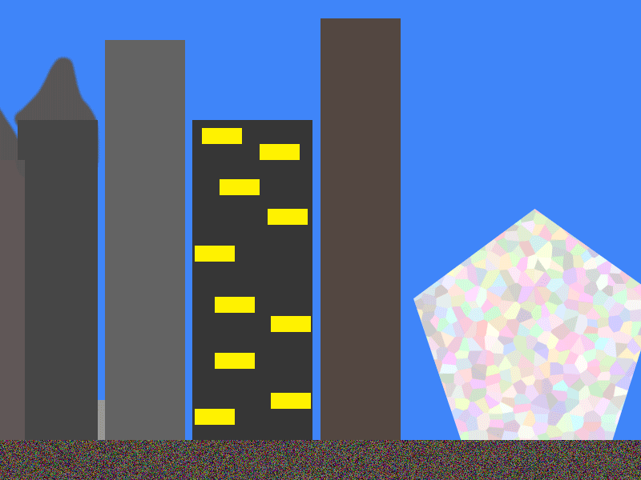

| Image |
Information |
|  |
This is an ariel view of Battery Park and Downtown
Manhattan. Image type: JPG. Image pixel size: 300px. Image file size: 48.7 KB.
Images credits go to: https://tia.photoshelter.com/image/I0000gbaOQQmCwPM |
|  |
This is a skyline view of Manhattan. Photo taken on iPhone 7 Plus.
Image type: JPG. Image pixel size: 300px. Image file size: 98 KB.
Image credits go to: Me, Murray |
|  |
Image made in photoshop. Image type: PNG. Image pixel size: 300px.
Image file size: 70 KB. Image credits go to: Me, Murray |
 |
This is a view of the boats on South Street.
Photo taken on iPhone 5s and then photoshopped. Image type: JPG.
Image pixel size: 300px. Image file size: 6.2 MB.
Images credits go to: Me, Murray |
|
Photoshopped 3-D image made. Image type: PNG. Image pixel size: 300px.
Image file size: 26.3 MB. Image credits go to: Me, Murray |
 |
Pano of Dowtown Manhattan. Photo taken on iPhone
7 Plus. Image type: JPG. Image pixel size: 300px.
Image file size: 6 MB. Image credits go to: Me, Murray |